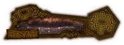

O Patrono do Andar: Binah
Tal como o andar de linguagem, o andar da filosofia possui uma Key page exclusiva da Binah Arbitra, sendo uma das mais poderosas do jogo, aplicando um efeito unico chamado "fada" capaz derreter chefões caso bem usado

Focado em
.Tal como o andar de linguagem, o andar da filosofia possui uma Key page exclusiva da Binah Arbitra, sendo uma das mais poderosas do jogo, aplicando um efeito unico chamado "fada" capaz derreter chefões caso bem usado